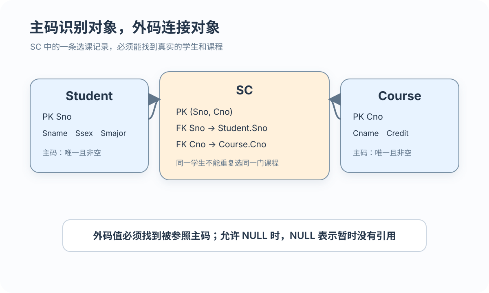

定义
DBMS 把语义规则存入模式与数据字典
让每一次数据变化都满足已定义的语义规则
 VER. 2608.2
Built with impress.js
VER. 2608.2
Built with impress.js
数据库完整性约束把现实语义、表间相容性和业务规则交给 DBMS 定义与检查
完整性与安全性都保护数据库，但完整性约束数据状态，安全性控制访问行为
| 关注点 | 防范对象 | 典型问题 |
|---|---|---|
| 完整性 | 数据正确且表间相容 | 成绩超范围、孤立外码 |
| 安全性 | 非法用户或非法操作 | 未授权读取、越权修改 |
完整性规则描述合法数据库状态以及状态如何变化
启用约束并由 DBMS 执行时，正常写入路径都会经过相应检查
DBMS 把语义规则存入模式与数据字典
DBMS 按约束类型在数据变化后或提交时验证
一般违约会被拒绝；参照动作可以拒绝、级联或置空
Sno、Cno 可各自重复；组合值必须唯一非空，且组合主码需表级定义

01
02
03
04
05
06CREATE TABLE SC (
Sno CHAR(8) NOT NULL,
Cno CHAR(5) NOT NULL,
Grade SMALLINT,
PRIMARY KEY (Sno, Cno)
);唯一与非空是完整性语义；索引只是实现手段
| 语义／实现 | 违反或作用 | 目的 |
|---|---|---|
| 组合值唯一 | 拒绝重复插入或修改 | 避免重复选课 |
| 主码属性非空 | 拒绝 NULL | 保证元组可识别 |
| 主码索引 | 加速查找与检查 | 实现手段，不等于语义 |
允许 NULL 时，NULL 表示暂时没有引用；本例的 Sno、Cno 另有 NOT NULL
01
02
03
04
05
06
07
08
09-- CREATE TABLE SC 中的外码子句；标准 SQL／MySQL 8.4 InnoDB 常见语法示意
CREATE TABLE SC
(
Sno CHAR(8) NOT NULL,
Cno CHAR(5) NOT NULL,
PRIMARY KEY (Sno, Cno),
FOREIGN KEY (Sno) REFERENCES Student(Sno),
FOREIGN KEY (Cno) REFERENCES Course(Cno)
);外码是否允许为空，要结合主属性、NOT NULL 和业务语义判断；空值不等于引用了不存在的对象
SC 是参照表；Student 和 Course 是被参照表
| 变化 | 可能问题 | 默认思路 |
|---|---|---|
| SC 插入外码 | 找不到 Student 或 Course 主码 | 拒绝（NO ACTION / RESTRICT） |
| SC 修改外码 | 新值无对应主码 | 拒绝（NO ACTION / RESTRICT） |
| Student／Course 删除被引用主码 | SC 出现悬空引用 | 拒绝或按策略处理 |
| Student／Course 修改被引用主码 | 原引用可能失效 | 拒绝或按策略处理 |
未指定动作时通常拒绝；级联或置空必须在外码定义中显式选择
级联不是默认答案，而是一种有后果的设计选择
01
02
03
04
05
06FOREIGN KEY (Sno) REFERENCES Student(Sno)
ON DELETE CASCADE
ON UPDATE CASCADE,
FOREIGN KEY (Cno) REFERENCES Course(Cno)
ON DELETE NO ACTION
ON UPDATE CASCADE拒绝策略阻止会破坏引用的删除或修改
级联策略在从属关系明确时同步相关变化
置空策略保留记录但解除引用；外码必须允许 NULL 且不能属于主码
本例 Sno、Cno 不能 SET NULL；MySQL 8.4 InnoDB 中，NO ACTION 与 RESTRICT 同为立即拒绝
把规则放在 DBMS 中，可以让所有应用面对同一边界
01
02
03
04
05
06
07
08
09
10
11CREATE TABLE Student
(
Sno CHAR(8) PRIMARY KEY,
Sname CHAR(20) NOT NULL,
Semail VARCHAR(100) UNIQUE,
Ssex CHAR(6) CHECK (Ssex IN ('男', '女')),
Smajor VARCHAR(40)
);
-- SC 已有 Grade 列，仅展示新增约束片段
ALTER TABLE SC ADD CONSTRAINT CK_SC_Grade
CHECK (Grade >= 0 AND Grade <= 100);| 变化 | 约束结果 | 处理 |
|---|---|---|
| Semail 重复非 NULL 值 | UNIQUE 违约 | 拒绝 |
| Ssex = NULL | CHECK 为 UNKNOWN | MySQL 8.4 可能放行 |
| Ssex = '其他' | CHECK 为 FALSE | 拒绝 |
UNIQUE 的可空列可能允许多个 NULL；若要求“非空且合规”，要同时写 NOT NULL 与 CHECK
约束范围可以从单列扩展到同一元组、可复用域以及跨表规则
01
02-- 元组级 CHECK 片段
CHECK (StartDate <= EndDate)同一行的两个列共同决定能否通过检查
元组级 CHECK 不能直接表达跨表存在性；复杂跨表规则需要 ASSERTION、触发器等机制
约束修改要同时考虑语义、已有数据和 DBMS 语法
01
02
03
04
05
06
07
08
09
10
11
12
13
14
15
16
17
18-- 标准 SQL 语义示意：把旧范围改为新范围
CREATE TABLE Student
(
Sno CHAR(8),
CONSTRAINT StudentKey PRIMARY KEY (Sno),
CONSTRAINT CK_Student_SnoRange CHECK (Sno BETWEEN '10000000' AND '29999999')
);
ALTER TABLE Student
DROP CONSTRAINT CK_Student_SnoRange;
ALTER TABLE Student
ADD CONSTRAINT CK_Student_SnoRange
CHECK (Sno BETWEEN '90000000' AND '99999999');
-- MySQL 8.4 删除 CHECK 约束使用 DROP CHECK
ALTER TABLE Student
DROP CHECK CK_Student_SnoRange;维护约束时先明确要删除或新增的规则，再按当前 DBMS 选择语法；新增规则前要检查已有数据和依赖应用
域可以复用类型与约束；下例采用标准／其他 DBMS 语法，不用于 MySQL 8.4 实践
01
02
03
04
05
06
07
08CREATE DOMAIN GenderDomain CHAR(6)
CHECK (VALUE IN ('男', '女'));
CREATE TABLE Student
(
Ssex GenderDomain,
EmergencyContactSex GenderDomain
);域负责复用取值规则；ASSERTION 可表达跨表或聚集约束，二者均是标准／其他 DBMS 概念，MySQL 8.4 实践用列定义和 CHECK
每项约束都要说明保护对象、检查边界和违约处理
PRIMARY KEY 保证组合值唯一，并要求主码属性非空
非 NULL 外码必须引用真实主码，参照动作还要选择处理策略
NOT NULL、UNIQUE 和 CHECK 表达用户规则，还要注意 NULL／UNKNOWN
约束名、ALTER TABLE 和域支持模式维护，具体语法取决于 DBMS
实体和用户定义约束通常在违约时拒绝；参照约束还可以按定义级联或置空
UNIQUE 遇到两个 NULL 会怎样？何时还需 NOT NULL？Ssex=NULL 与 Ssex='其他'？能否检查另一表？